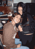

Amanda Zaniratti Prado (1988)
|
|
ÁLBUM: 
Para ampliar a foto clique sobre ela.
[imagem histórica não recuperada: ../MiniFeHeViAmDeLoGeViRaGr.gif (Boa reunião de família em Belo Horizonte)]
Árvore |
Pais |
Irmãos e irmãs |
Cônjuge |
Filhos |
Helena
Zaniratti Marco Antônio Prado |
Ângelo > Amanda < |
X |
X |
FONTES:
Nancy.
22.01.2005 Página inicial